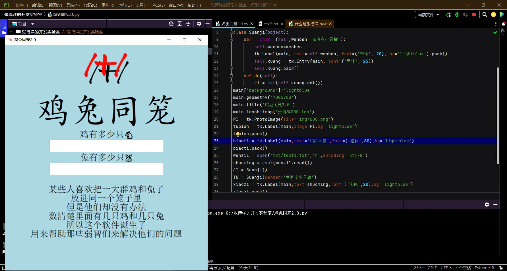
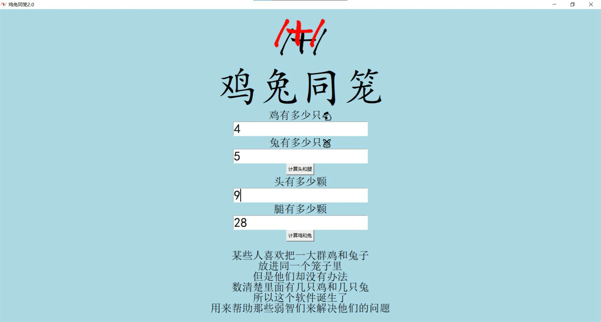

年
11月
16日
网址： https://zhangboyaung.github.io/
由GitHub托管
年
11月
17日
风吹草低见有阳
今天仍在隔离
形式根本没有好转
年
11月
18日
年
11月
19日
CSS（叠层样式表）
年
11月
22日
CSS动画效果
年
11月
26日
年
11月
30日
江泽民同志逝世！享年96岁
链接：新华网《告全党全军全国各族人民书》
年
12月
2日
我一直没回过学校
每天在家隔离
这两个月里
我们呼和浩特的领导们都做了点什么？
一栋楼里有一个阳
要么门上贴封条
要么一栋楼的活人全拉走
昨天竟然又新增本土51
呼和浩特人真是太“厉害”了
下图为呼和浩特新增本土趋势

明天是周六
周六和周日有考试
必须进全班前3！！！
一个严重的问题：
笔记本电脑风扇的声音比拖拉机还大
可能会严重影响我答题
年
12月
4日
这两天的考试感觉不错
年
12月
12日
班级第3，年级（600）第15
争取进前10
年
12月
14日
现在大多数笔记本已经不使用机械硬盘，因为固态硬盘比机械硬盘的寿命更长
年
12月
15日
我发现自己的浏览器不能正常访问GitHub，可能只是因为它的服务器离我太远，据我所知，GitHub目前还没在中国建服务器，所以对GitHub的访问请求 会发送到新加坡的服务器，理论上新加坡到呼和浩特的距离不是很大，但是速度却如此之慢，有时候甚至根本访问不到。 我推测中国的国家防火墙应该还没有盯上这个网站。我发现，修改Windows系统中的hosts文件（C:\Windows\System32\drivers\etc ）可以改变计算机对一个网站域名的默认IP访问位置，于是我下载了dogfight360大佬的hosts文件修改程序。
没想到此程序实在强大 ，可以随时检测对位于美国的各个GitHub服务器的访问延迟，然后找到延迟最小的IP，加到hosts文件中。
年
12月
16日
年
12月
20日
鸡兔同笼1.0
年
12月
26日
温度竟然已经超过了 int('00101000',2) 摄氏度.
年
12月
27日
这是一个专门用来卸载流氓软件的东西
因为每天总有一堆垃圾软件
不经过我的同意出现在我的计算机里
光明正大地在我的电脑里耍流氓
购买这款软件仅需14.98美元
我去百度找了一个这款软件破解补丁
这款软件不仅可以卸载
那些想方设法阻止我卸载的老流氓们
还可以把卸载后留下的一些文件和注册表也清除掉
非常好用
年
1月
1日
今天放假
昨天放假
明天放假
一定休息好
精神充沛地迎接这一年
（＾∀＾●）ﾉｼ
不知道若干年后的我看到这里作何感想？😕
年
1月
5日
虽然几天前装了卸载软件
但是那些流氓软件依旧无法无天
我发现后只能手动把他们卸载掉
为了防止被气死
我装了据说很厉害的国产杀毒软件火绒
但是它只能消灭一部分流氓
我又安装了卡巴斯基
这可以说是世界顶尖的杀毒软件
俄罗斯的黑客们的技术非常高
他们的杀毒软件也极其强悍
这款软件的开发者是俄罗斯的卡巴斯基
据说他曾是前苏联的克格勃特工
担任解析密码的工作
有些人怀疑这款软件可能被用来窥探其他国家的机密
这款软件因为俄乌冲突
在今年遭到欧盟国家的各种制裁
这款软件的全方位安全版本每年仅需618人民币
我没有找到破解的方法
30天的试用期到了以后
我还是能用这款软件
但是大多数的功能都不能用
我的计算机里从来没有什么病毒
但是用它来干掉流氓的广告软件非常好用
它在我用钉钉会议上课时
杀掉了某些重要文件
使得钉钉会议没法进行
我重新装了好几次钉钉也没用
我至今不知道卡巴斯基杀了什么东西
年
1月
8日
寒假开始
开始写代码
年
1月
10日

年
1月
11日

年
1月
16日
可是发现了一个很大的问题，
这个软件是用python编写的，为了使2.0版本拥有GUI界面
我使用了tkinter模块
但是这个软件的窗口是没有进度条的
那么在我的显示器上可以正常显示
但是在小一点的屏幕上就看不到最下面的部分
所以，我决定修改一下代码
把窗口上的东西缩小一点